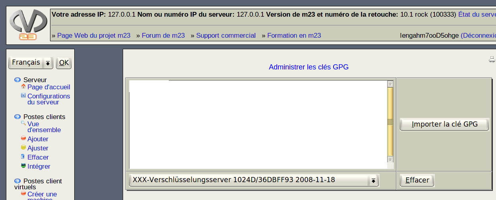

Dans ce dialogue Gérer les clés GPG, vous pouvez ajouter des nouvelles clés GPG au serveur ou effacer des clés existantes.

- Ajouter une nouvelle clé:
- Avec votre outil préféré de gestion des clés GPG, copiez tout d'abord la clé souhaitée dans le presse-papiers.
- Puis, entrez la clé dans le champ de saisie à la gauche de Importer la clé GPG.
- Enfin, cliquez sur Importer la clé GPG.
- Effacer une clé existante:
- Sélectionnez la clé à effacer dans la liste.
- Cliquez ensuite sur Effacer.
root
2019-06-03